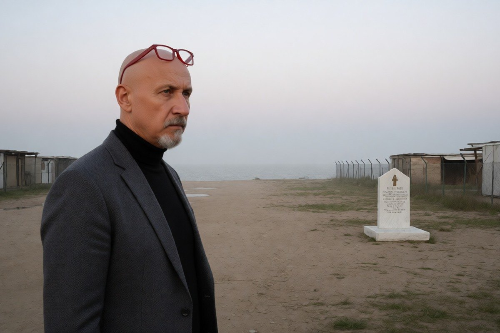

Cronaca · 4 novembre 2026
Omicidio Pasolini, la Procura di Roma riapre il caso dopo 51 anni

Il nuovo fascicolo nasce da un esposto che chiede di ascoltare un testimone mai sentito e di rileggere insieme tutti gli elementi raccolti, comprese le immagini dei telegiornali dell'epoca.
di Franco Zanghì
Nel giorno esatto dell'anniversario si è saputo che la Procura di Roma ha aperto un nuovo fascicolo sull'omicidio di Pier Paolo Pasolini, ucciso all'Idroscalo di Ostia nella notte fra il 1° e il 2 novembre 1975. L'indagine è affidata alla sostituta procuratrice Silvia Santucci.
Da dove nasce il fascicolo
Alla base c'è un'istanza dell'avvocato Stefano Maccioni, che in passato ha assistito un cugino di Pasolini, Guido Mazzon. L'istanza era stata depositata a novembre dell'anno scorso e integrata a maggio.
Chiede due cose. La prima è ascoltare un testimone mai sentito prima. La seconda è rileggere insieme, e non uno per uno, tutti gli elementi raccolti in mezzo secolo, comprese le immagini dei telegiornali Rai di quei giorni.
La tesi dell'avvocato è che Pelosi, quella notte, non fosse con certezza da solo, e che occorra accertare chi ci fosse con lui.
Quello che la giustizia ha stabilito
Per l'omicidio è stato condannato Giuseppe Pelosi, che all'epoca aveva 17 anni. Per la giustizia italiana è lui l'autore, e da solo. Pelosi è morto nel 2017.
L'ultima inchiesta era stata archiviata nel 2015. Nel 2023 era stata chiesta un'altra riapertura per approfondire tre profili genetici individuati sui reperti, riferibili a persone diverse da Pelosi: anche quella richiesta era stata respinta. Questa volta, invece, il fascicolo è stato aperto.
Il punto
Un caso che per mezzo secolo si è retto su un solo colpevole, con tre tracce genetiche rimaste senza un nome, non è un caso chiuso: è un caso fermo. La differenza non è formale, perché un caso fermo si può ancora muovere, e questa è la ragione per cui un'apertura di fascicolo, dopo 51 anni, è una notizia e non una curiosità.
Su questo omicidio si sono costruiti libri, film e sospetti politici di ogni colore, e proprio per questo serve il contrario delle suggestioni: atti, verbali, riscontri. Che il nuovo testimone porti un nome, un dettaglio o nulla, lo diranno i magistrati.
Resta l'invito dell'avvocato, che è l'unica cosa che oggi dipende dalle persone e non dalle carte: chi sa qualcosa e ha taciuto può ancora parlare. Dopo 51 anni non c'è più molto da proteggere.
Fonti
- Ansa, «Aperta un'indagine sull'omicidio Pasolini, c'è un nuovo testimone», 2 novembre 2026
- Agi, «Omicidio Pasolini: riaperto il caso dopo 50 anni», 2 novembre 2026
- Il Foglio, «La procura riapre le indagini sulla morte di Pier Paolo Pasolini», 2 novembre 2026
- Il Tempo, «Pier Paolo Pasolini, si torna a indagare: l'esposto e il nuovo testimone», 2 novembre 2026
- Tgcom24, «La procura di Roma apre una nuova indagine», 2 novembre 2026
L'identità del nuovo testimone non è resa pubblica e il contenuto delle sue dichiarazioni non è noto. L'apertura di un fascicolo non equivale a una nuova ricostruzione dei fatti.